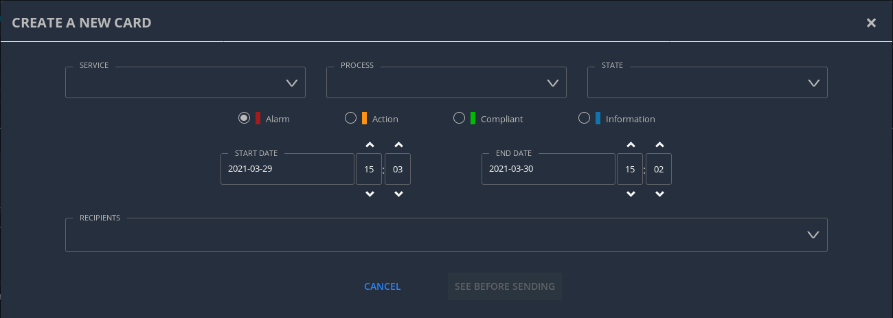
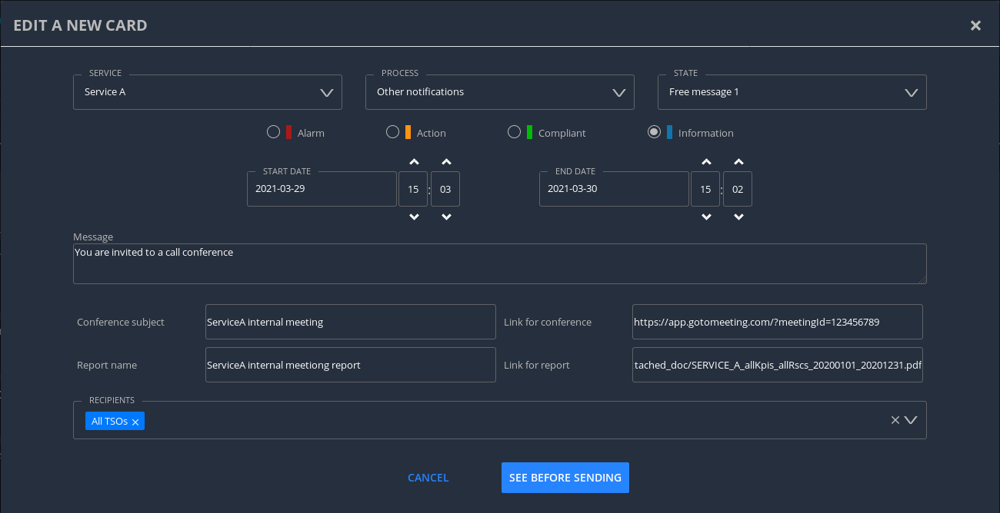

1. Executive Summary
This document is the manual (user guide) of the Let’s Coordinate tool developed for RSC services in order to present the main screens, functionalities of the tool and describe how to use the tool.
With this tool, user will be able to receive notifications to warn about relevant information linked to business processes (quality check report, results of calculation…) and to consult and export RSC KPI reports for these processes.
2. Introduction
2.1. User types
For the Let’s Coordinate application, we have 3 user types:
-
Transmission System Operator (TSO),
-
Regional Security Coordinator (RSC),
-
Administrator (ADMIN).
Let see details about each of them:
2.1.1. TSO user
Each TSO is able to define a list of users among its entity to access to the tool within keycloak tool. Each TSO has the possibility to interact with dedicated notifications only for its entity as TSO. Each TSO authorized user is able to login to the tool, acknowledge notifications for its TSO for authorized RSC services, to consult KPIs for RSC processes and generate RSC KPI report.
2.1.2. RSC user
Each RSC is able to define a list of users among its entity to access to the tool within keycloak tool. Each RSC has the possibility to interact with notifications for its entity as RSC and all received notifications related to one of the TSOs under its responsibility (without impacting the TSO notification itself). Each RSC authorized user is able to login to the tool, acknowledge notifications for its RSC for authorized RSC services, to consult KPIs for RSC processes and generate RSC KPI report.
2.1.3. Administrator user
In general, administrator (ADMIN) user has specific rights and can’t access to TSOs or RSCs data. Some operations are restricted to users with the ADMIN role, either because they are administration operations with the potential to impact the OperatorFabric or Let’s Coordinate instance as a whole, or because they give access to information that should be private to a user.
Below is a quick recap of these restricted operations:
-
Users Service
-
Any action (read, create/update or delete) regarding a single user’s data (their personal info such as their first and last name, as well as their settings) can be performed either by the user in question or by a user with the ADMIN role.
-
Any action on a list of users or on the groups (if authorization is managed in OperatorFabric) can only be performed by a user with the ADMIN role.
-
-
Thirds Service
-
Any write (create, update or delete) action on bundles can only be performed by a user with the ADMIN role. As such, administrators are responsible for the quality and securi-ty of the provided bundles. In particular, as it is possible to use scripts in templates, they should perform a security check to make sure that there is no XSS risk.
-
| The ADMIN role doesn’t grant any special privileges when it comes to card consultation (be they current or archived), so an user with the ADMIN role will only see cards that have been addressed to them or to one of their groups), just like any other user. |
2.2. Supported browsers
The tool is supporting the 3 most recent versions of these 3 following web browsers:
-
Google Chrome,
-
Mozilla Firefox,
-
Microsoft Edge.
3. System login and logout
3.1. System login
To connect/log in to the Let’s Coordinate tool, user will have to use the Let’s Coordinate direct url to open directly the Let’s Coordinate tool: http://localhost/ui/.
After connecting to url address, user should enter its credentials:
-
Login : username or email
-
Password
Then validate with “Log In” button.
After login, user will be redirected to the “Feed screen” of Let’s Coordinate which is the Home screen of the tool.

The name (last and first names) and the entity (name of TSO or RCC) will be displayed on the right part of the header.
3.2. System logout
To log out, user can disconnect with a specific button on the top right part of the header of the screen. With the little triangle button on the right of user name, user can click on it to display the content and then select log out.

After log out, user will come back to login page.
4. Screens presentation
4.1. General screen overview
The proposed GUI for the application is common for all screens in the application.

-
On the top of the page, you have a header with
-
Menu to access to the different screens of the tool.
-
Card Feed screen : to receive and display the different cards or notifications. User will have the possibilities to manage the cards in this screen.
-
Archiving screen : to access to old notifications which are archived
-
RSC KPI report screen : to configure and present the relevant Key Performances Indicators (KPIs) of the STA and OPC service (graphs and report)
-
Notification reception configuration screen : to configure which notification user want to see or not.
-
Card creation screen : to create and send cards to different users or/and group of users
-
-
Login information
-
In the top right of the page, you have the name & company of logged user
-
Below to the name of the logged user, current time for selected time zone of the day is displayed.
-
-
-
Below the header, you have the content of the screen
4.2. Card Feed screen
The card feed screen is the place to receive and manage cards/notifications.
On this screen,
-
Below the header, you have a timeline which presents when an event (card) is expected.
-
On the left of the page, you have the deck of cards/notifications which presents all received cards
-
On the right of the page, you have the detailed information of the card.
4.2.1. Notification feed/deck consideration
Global concept
On the left part of feed screen, a deck presents received all notifications.
Notification (or card) concepts
Card is an object which can support different operational information relevant for business process. Each card has a reduced view and a detailed view to see more about the notification.
There are 2 kinds of notifications which depends on the event to raise:
-
INFO: for an information card, user can just acknowledge it.
-
ACTION: for an action card when user should act (accept, reject, explanation about rejection and comment).
The colour of the notification depends on the status of the card:
-
INFO – blue : Information is received like results of calculation are available
-
COMPLIANT – green : Validation has been performed successfully like ACK is positive
-
ACTION required - orange – Warning : Please consider this notification and act to manage the raised issue
-
ALARM – red – Critical issues like Process failed, validation failed
They are 2 kinds of information inside a notification:
-
General information : notification with a general information along the business period
-
In such notification, a global information is applied for all business period without any specific timestamp identified
-
Ex : Process success, process failed, positive ACK
-
-
Specific timestamped information : notification with information for specific timestamps inside the business period
-
In such notification, different information for dedicated timestamp are identified. Ex :
-
Negative ACK ⇒ all severe errors, errors and/or warnings are detailed per timestamp
-
Positive ACK with warnings ⇒ All warnings are detailed per timestamp
-
-
Arrival date and business period
Each notification has an arrival date and a business period:
-
Arrival date to know when this notification arrived in the system
-
Example of arrival date : 19/09 13h23
-
-
Business period or validity period: from when to when this information are relevant from business point of view.
-
Ex: If a process result notification arrives the 19/09 at 13h23 and concerns the Month ahead process (so for October),
-
Example of business period : 01/10 0h30 → 01/11 0h30
-
Notification View
There are 2 views for a notification:
-
Reduced view in the deck of notification
-
Summary of the notification with limited information
-
Depending if the card has been acknowledged or not, a ticked appears on the right part of the notification
-

-
Detailed view in the right part of the screen
-
Presentation of the content of notification with detailed information
-
In the detailed view, you can have different buttons to act on this notification.
-
In case of informative notification, you will be able to acknowledge/cancel acknowledgement of a notification:
-
-
-
(SOON) In case of SMART notification, you will be able to answer to some questions and then your answers to the coordination system.
Read/Unread notifications
A new notification when arriving in the deck is always an unread notification. User can recognize it by the bold weight of the reduced view content:
If an user clicks on the notification for the first time, then the notification will be changed to read status and the symbol will disappear.
Notifications arrival with sound
User have the possibility to activate (or not) a dedicated sound bells when a new notification arrives. Each color/severity of notification has a different sound and an user can decide to active the sound for its arrival by ticking the dedicated box:

Deck display
On the left part of feed screen, a deck presents received all notifications based on their business period. Displayed notifications in the deck are the ones who are valid referring to the dedicated timeline view meaning if at least one hour from business period (from valid from to valid to) of the notification is in-cluded in the period presented in timeline view. Some buttons are displayed on top of the deck to perform some ordering or filtering:
Deck ordering
Notifications in the deck are sorted by default by "Unread then date" order. User can decide to order the notifications in the feed by arrival date or by criticity/color:
Deck filtering
Some filters are proposed to filter the deck of card:
-
Between 2 arrival dates
-
Based on the type/color of the notifications
-
User can ticked or un-ticked notification color he wants to see :
-
-
Status of the notifications: Acknowledged/Not acknowledged with the following menu. User can select to see:
-
all notifications (acknowledged and not acknowledged)
-
only acknowledged notifications
-
only not acknowledged notifications
-
By default, only “Not acknowledged” notifications are displayed: As soon as a user will acknowledge a notification, it will disappear based on this filter.
4.2.2. Timeline consideration
Global concept
Below the header, a timeline is proposed. This timeline represents a spatial view of information inside the notification depending on its category/color and the event arrival or occurrence.
Different views
To ease the view and to match with relevant timeframe processes, 4 different zooms are proposed:
-
7 Day view from D-1 0h selected time until D-7 selected time – Default view
-
Week view from Saturday 0h selected time until next Saturday 0h selected time
-
Month view from 1st of the month 0h selected time until 1st of next month 0h selected time.
-
Year view from 1st January 0h selected time until 1st January of next year 0h select time.
-
>> : to move to the next period
-
<< : to move to the previous period
A specific button on the bottom right is dedicated to hide (or not) the timeline:
When timeline is hidden, the considered business period (before it was hidden) is displayed on the left of its buttons.
For all first-time period view selection, the selected period will be preceded by the remaining days and hours between real time (current time) and begin of selected period (operational view).
User can click on >> button to see the next period or click on << button to see the previous period. In case user was in the first-time period view selection, if user clicks on << or >>, then the timeline will be configured in study mode view: beginning and end of the period displayed in the timeline are referring to selected period (without representing real time if not inside the period).
Time tick consideration
Each time tick represents a specific date and hour. The information displayed in this tick are the information from this time tick and before the next one.
For example if the time tick is for the 11/10 0h with 7D view (a time tick every 4h in that zoom), user will see aggregated values from 00h to 3h59. And for the time tick of 11/10 4h, information from 4h to 7h59 etc…
Real time tick displays current hour and day. It’s marked as a bold grey tick in the timeline if it is included in the timeline view/zoom. Before real time tick, some days or hours are displayed in order to present events now in the past.
Bubble tips in the timeline
Bubble tips are used in the timeline to present the number of notifications detected for the dedicated time tick per categories of notification (blue, red, green or orange).
Ex: Here 5 red notifications have been detected, 2 orange ones… for the period between the 1st of january and the 31th of december 2021.
The way to spatialize a notification in the timeline depends on kind of notifications.
-
In case of general information notification (notification with a general information along the business period), this information will appear in the timeline at the arrival date
-
This information will appear in the timeline at the exact time/date when the notification arrived – when the global process/quality check has been done
-
Ex: if a process success notification arrived at 9h53 24/06, then the bubble will be at this time/date.
-
-
In case of notifications with information for specific timestamps inside the business period, each information for dedicated timestamp will appear in the timeline.
-
Each event (error, warning…) inside the notification will be presented with a dedicated bubble in the timeline
-
Ex : if inside a negative ACK notification, error A is detected the 25/06 12h and error B is detected the 26/06 18h, then 2 bubbles are represented within daily view : one for the error A and one for the error B with dedicated date/time.
-
The number in bubble is displayed in 2 digits. In case they are more than 99 notifications (rare case) for one bubble, then the number is “+99”.
Visualisation of content of bubble
User can click on a bubble to see the details of events inside the bubble. A window will appear and present all summary of notifications considered in this bubble. If user select one of the item presented, then the dedicated notification will be opened in detailed view.
Link between timeline view and card in the deck
The timeline view affects the notifications in the deck by kind of filter:
-
Each notification in the deck has a business period (businessDayFrom – businessDayTo).
-
If the business period of notification is included in the timeline period (timeline from – timeline to), then the notification will appear in the deck.
-
It can happen that a notification is not represented in the timeline as its arrival date/hour is not included in timeline view but as its business period is still included in the timeline period/view, the notification stays in the deck of notifications.
-
-
If the business period of notification isn’t anymore included in the timeline period/view, then the notification will be moved to archiving system.
Day/night mode
This functionality is used to change the color of the background of the tool by using a dedicated menu item:
-
Day mode menu item to switch background to day mode with light colors
-
Night mode menu item to switch background to night mode with dark colors
Example for the feed screen :
Logged Username, current time and user settings
In the right part of the header the following is presented: the name (first and last name) of logged user, its company and the current timing for selected timezone: With the little triangle button, user can click on it in order to open the "settings" panel, open the "notification reception configuration" panel, display information about the application version, change the day/night mode or simply logout.
-
User settings screen
In this screen, user can decide to change its timezone based on a proposed list of European cities: all hours in the tool will be updated referring to this timezone.

-
About screen
When selecting “About”, version of deployed tools are displayed.

4.3. RSC KPI report screen
This screen displays the relevant Key Performance Indicators (KPIs) for business processes.
It’s composed of two parts:
-
Configuration RSC KPI report screen : This screen proposes settings to configure the report user want to see. When the settings are set, then click on “Submit” button to display the report. User can choose:
-
Period of the report and graphs
-
Which RSC is concerned?
-
In case of Pan European (not regional or per RSC) KPIs, no difference are done if one RSC or all RSCs is selected
-
-
Which RSC service ?
-
Which kind of KPIs ?
-
Global performance and/or Business ?
-
-

-
RSC KPI display screen : In this screen all graphs about KPI based on user configuration will be displayed. For every graph, user can add a comment below the graph itself.User has the possibility to export the graphs with comments in a pdf report by clicking on the PDF icon or export data (data only without graphs) in an excel report by clicking on the excel icon at the bottom. In case of pdf export, comments will be displayed.

4.4. Archiving screen
This screen displays all past and current notifications. User is able to search among all notifications available by using filters based on:
-
Tags : types of notification
-
RSC Process (CGM, CSA, CCC, OPC, STA…)
-
Kind of notification per process (CSA process success, CSA process failed…)
-
-
Published date & hour of the notification : publish from and publish to
-
Business period date & hour inside the notification content : active from and active to
5. Tool functionalities
5.1. Notification management
Notification reception
A card appears in the card deck and displays a bubble in the timeline (depend on information type of card)

Open a notification
User can click on a notification in the deck to open the detailed content

Acknowledge a notification
With action buttons in detailed view at the bottom right, user can act on the card (acknowledge it if card type is information or accept/refuse it if card type is action).
Ex : For informative notification, user is able to acknowledge the notification to keep track of its reading. After a performed acknowledgement, notification will disappear from the deck. The only way to see it again is to consult the Archiving screen.
5.2. RSC KPI graphs and report
5.2.1. Daily view
Set RSC KPI graphs
The user chooses the RSC service, the period (starting and ending dates), the RSC or Region, and the KPI data type (Global performance and/or Business process):
Period selection
User selects the period from 1 day to 1 year
Selection of concerned RSC
This selection allows report to be specific for one RSC or one Region, or general in case of Pan-EU (Pan-European).
Figures depends on selected type of KPIs:
-
If global performances KPIs : no difference if user selects a RSC or all RSC, only global KPIs here,
-
If business KPIs : these KPIs are different for each RSC as data are correlated to TSOs under responsibility of each RSC.
Selection of RSC service
This selection allows to choose which RSC services KPIs should be displayed:
-
CGM,
-
CSA,
-
CCC,
-
OPC,
-
STA,
-
etc…
Selection of Data type
This selection allows to select kind of KPIs to display:
-
Global performances KPIs: RSC KPI related to the process itselft
-
Business KPIs: RSC KPI related to the business results of the process – Different from one RSC to another one as TSOs under responsibility of each RSC differ.
RSC KPI graphs in GUI
User can see dedicated RSC KPIs graphs in GUI. He can add some comments below each graph.
Export KPI report
The user can export KPI in pdf format by clicking on the dedicated button. It can also download report in xlsx to export only the values.

RSC KPI report - pdf sample :
RSC KPI report - xlsx sample :
5.2.2. Multi-year view
Set RSC KPI graphs
The user chooses the RSC service, the period (starting and ending years), the RSCs or Regions/CCRs, and the data type (Global performance KPIs and/or Business process KPIs):
Period selection
User selects the period from 1 to 5 years
Selection of concerned RSC
This selection allows report to be specific for one or many RSCs, or one or many Regions.
Figures depends on selected type of KPIs:
-
If global performances KPIs : no difference if user selects a RSC or all RSC, only global KPIs here,
-
If business KPIs : these KPIs are different for each RSC as data are correlated to TSOs under responsibility of each RSC.
Selection of RSC service
This selection allows to choose which RSC services KPIs should be displayed:
-
CGM,
-
CSA,
-
CCC,
-
OPC,
-
STA,
-
etc…
Selection of Data type
This selection allows to select kind of KPIs to display:
-
Global performances KPIs: RSC KPI related to the process itselft
-
Business KPIs: RSC KPI related to the business results of the process – Different from one RSC to another one as TSOs under responsibility of each RSC differ.
RSC KPI graphs in GUI
User can see dedicated RSC KPIs graphs in GUI. He can add some comments below each graph.

Export KPI report
The user can export KPI in pdf format by clicking on the dedicated button. It can also download report in xlsx to export only the values.

RSC KPI report - pdf sample :
RSC KPI report - xlsx sample :
5.3. Reception notifications configuration
Reception of the notifications is configurable for each RSC service.
For each RSC process, a specific menu allows each user to determine which notification he wants to receive:
-
If the notification is ticked, then user will receive it,
-
If not, user will not receive it.
By confirming its choice with dedicated button , user will update its default settings. These settings will be applied for the next connection (after log out and log in again).
5.4. Archiving system
User has the possibility to consult previous past notifications in Archiving screen:
The screen is composed of 3 different components:
-
Research parameters
-
Found notifications list
-
Detailed view of notification
Research parameters
User can decide to set up some filters or not and see dedicated cards by clicking on search button
Different available filters are:
-
Tags = user can select the type of notification (only 1 choice possible)
-
Process tags
-
Details tags per process (CSA process success, CSA process failed…)
-
-
Published date & hour :
-
publish from = all notifications published from this date/hour
-
publish to = all notifications published before this date/hour
-
-
Business period date & hour : active from and active to
-
active from = all notifications where business period is active at least in one hour from this date/hour
-
active to = all notifications where business period is active at least in one hour from this date/hour
-
Found list of notification
List of notification found in the database will appears on the notification list (left part). In case of multiple pages, user can change from one page to another one with dedicated buttons.
Detailed view of notification
User can open a notification in detailed view to consult them more in details by clicking on it.
5.5. Card creation
The goal of this screen is to create a card from Let’s Coordinate GUI and to send this notification to other users.
A specific button on the top right is dedicated to open the card creation screen
5.5.1. Default view
When clicking the card creation button, the following screan is opened:

In this screen, the user is invited to select/fill the required fields:
-
Process: the list of user services (Service A, Service B, …)
-
State: Should be concidered as a sub-process
The state is presenting the message type. For the generic case, only one message called "Free message 1" is provided. In the next versions, the "SMART Notification" type will be added to the list of states.
-
Severity: Allow the changing of the card’s color according to the severity of the card (Alarm, Action, compliant, information).
-
Start date: The notification’s business start date
-
End date: The notification’s business end date. By default the end date value is the start date plus 24H.
-
Recipients: The list of users or/and group of users for whom the notification will be sent.
5.5.2. Free message 1
When the state "Free message 1" is selected, the following fields will be displayed:
-
Message: The message of the notification
-
Conference subject: The subject of the conference. When this field is filled, the "Link of conference" field will be required.
-
Link of conference: The link of the conference. When this field is filled, the "Conference subject" field will be required.
-
Report name: The name of the report. When this field is filled, the "Link of report" field will be required.
-
Link of report: The link of the report. When this field is filled, the "Report name" field will be required.


6. Existing generic notifications
Depending on the business process, notifications will be different and adapted to each business process.
5 generic notifications are identified:
-
Process success : This notification is emitted as soon as a process finished a step of the RSC process which was successful. This notification can present some files as process results to be downloaded. Color = BLUE.

-
Process failed : This notification is emitted as soon as a process finished a step of the process wich was not successful or failed to finish the process step. This notification can present some files as process failure information to be downloaded. Color = RED.
-
Validation of input file : This notification is emitted as soon as a validation of an input file has been performed by a business RSC/TSO tool and a dedicated ACK has been generated. There are 3 possibles results :
-
Positive validation : in case the input file is correct. Color = GREEN
-
-
Positive validation with warnings : in case the input file is correct but has some warnings. Color = ORANGE
-
Negative validation : in case the input file failed the validation as detected errors. Color = RED